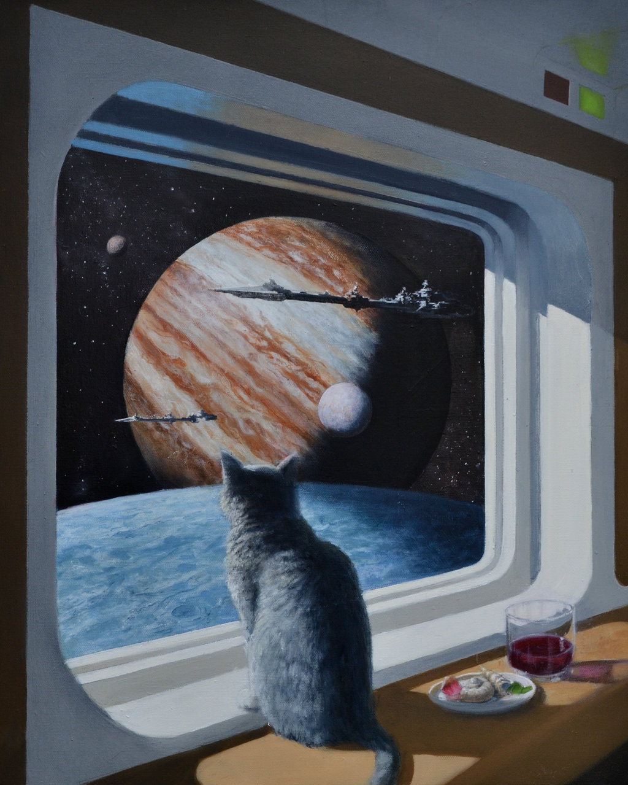

With suitable apologies to David Brin.
Apologies also to the (shamefully, now-forgotten) author of a short story I read many moons ago wherein it turned out that a crashed spaceship’s crew was comprised of a number of animals (wolves, eagles...even a bear, I think). I remember the closing idea being that evolution had suddenly caught up with all the various species, making them the perfect complement to Man.

A little piece inspired by io9’s Lauren Davis’ Concept Art Writing Prompt: A Cat's Eye View of a Spaceship.
The idea is to write a short story relating to the beautiful picture shown at left. Entitled simply “Ship’s Cat”, it was painted by Keith Spangle and comes to us all via science & fiction.
The Human sons and daughters of far-off Terra have learned that to make a mark in this Universe, one needs a little help.
Over the millennia, ‘uplifted’ species of dolphins, chimps, eagles and dogs have added their own unique set of skills to the wider family and ensured that it has continued to be strong and to survive.
Still, as the family travelled new paths among the stars, a certain lack became apparent.
Bitter experience has taught that to prosper in an uncaring and hostile cosmos more is needed than just a willingness to engage, more than a skilled set of minds and a generous morality, more than just a sense of derring-do. There are occassions when it is necessary to practice patience, to show cunning and stealth, to embrace the chase and to unleash unbridled ferocity. There is even a time to revel in the sheer pleasure of the kill.
To truly flourish in our Universe, they found, you sometimes need the services of a cat.
I hear the call: “Captain to the bridge.”
So here comes felis astronomica, freshly uplifted member of the Terran family.
I can hardly wait to feel the life of the Universe beating under my outstretched claws.
“On my way.”